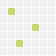
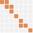
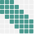
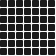

sparse
smart
structured
scalable
A High-Performance Framework for Sparse Matrices
sTiles targets the full Cholesky → solve → selected inverse pipeline on a single shared-memory node, using tile-based parallelism and GPU acceleration. Today's release handles symmetric positive-definite matrices across the entire spectrum, from very sparse to fully dense, with one unified solver. Distributed-memory support is on the roadmap.

Sparse

Semi-Sparse

Semi-Dense

Dense